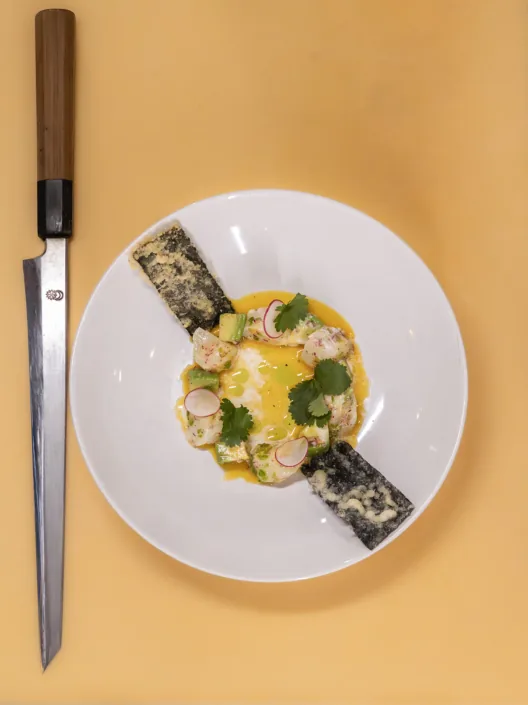
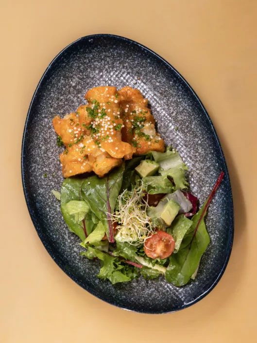
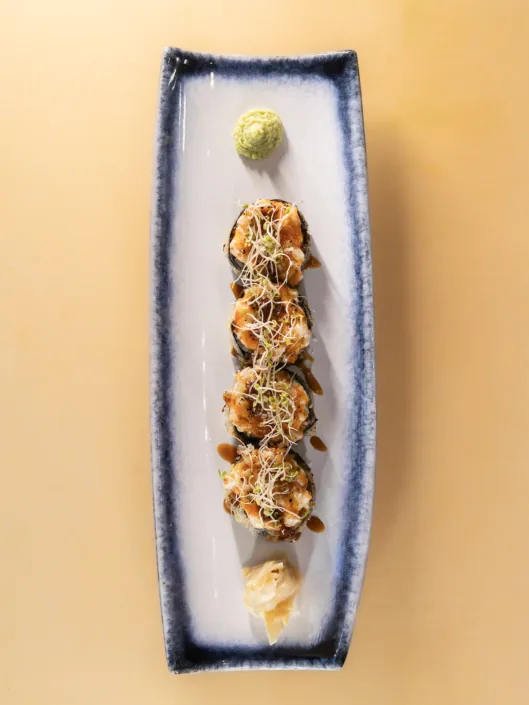
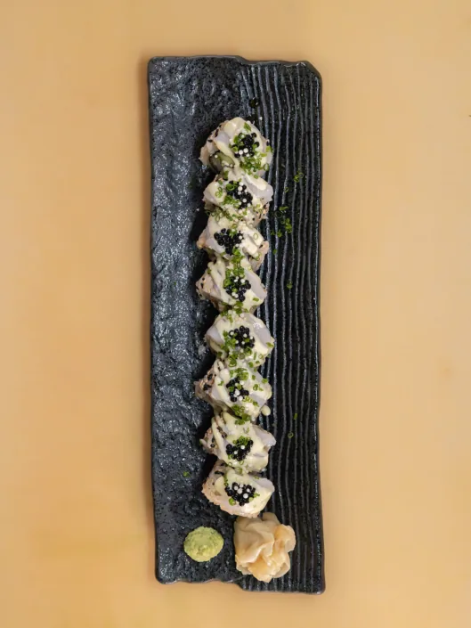
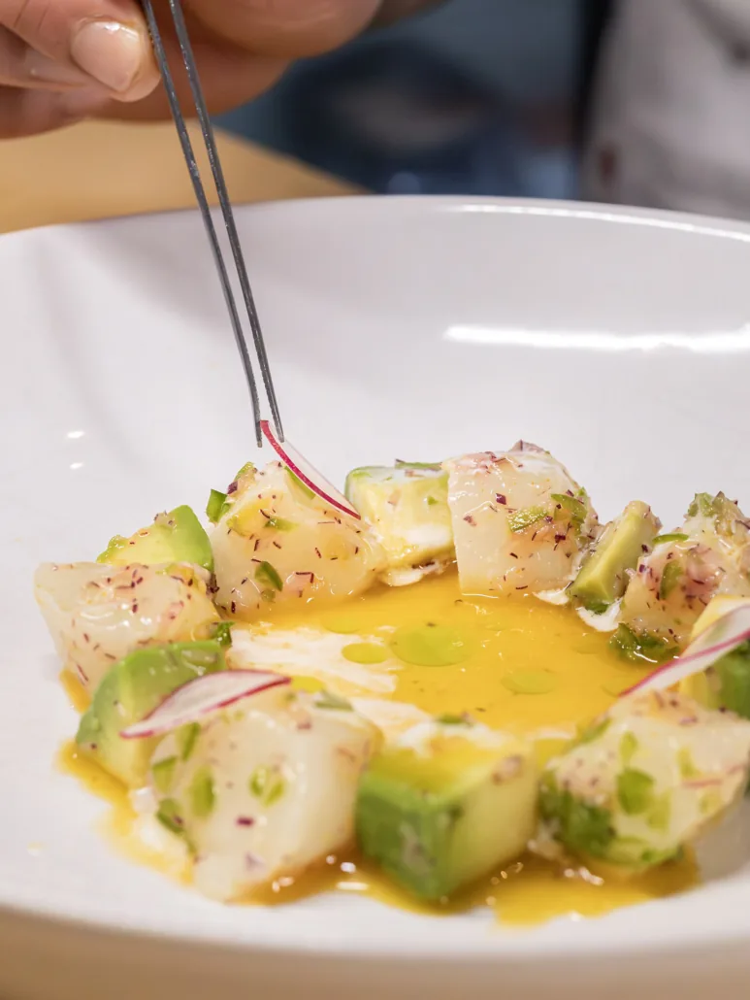
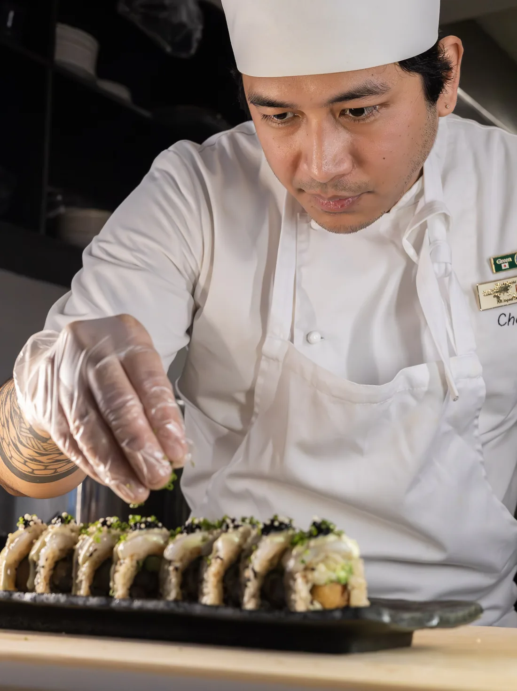

Fersk sashimi, nigiri og kreative makiruller i en rolig gate. Book bord, bestill takeaway, eller få maten levert rett hjem.
Menyen
Small dishes, poke bowls, signature sashimi, nigiri, futo- og special rolls, sett for flere og en liten dessert til slutt. Se hele menyen med priser og allergener.





Skjult meny
Kakure Omakase er en eksklusiv og skjult matopplevelse der gjestene får servert en personlig meny satt sammen av vår mesterkokk. Hver rett bygger på sesongens beste råvarer, nøye utvalgt for å fremheve naturlige smaker og rene teksturer. Måltidet serveres i en intim og minimalistisk setting som lar deg fokusere fullt på smaksreisen, håndverket og detaljene som gjør japansk gastronomi unik.
Opplevelsen følger omakase-tradisjonen der kokken leder deg gjennom et måltid skreddersydd for kvelden. Ingen to opplevelser er helt like, og kombinasjonen av teknikk, kreativitet og respekt for råvarene skaper en atmosfære som er både rolig og raffinert. Kakure Omakase er ikke bare et måltid men en dypere utforskning av japansk kulinarisk kunst som inviterer deg til å smake, lære og oppdage noe nytt for hver servering.

Om oss
Sushi Roll Sandviken ligger i hjertet av en rolig og sjarmerende gate i Bergen og er et sted der japanske mattradisjoner møter moderne smaker. Vi brenner for å skape rene, friske og balanserte retter, med fokus på kvalitet i hver eneste ingrediens. Hos oss finner du alt fra klassiske nigiri og sashimi til kreative makiruller og varme småretter som passer både nye gjester og erfarne sushielskere.
Vi ønsker at hvert besøk hos oss skal føles som en liten pause fra hverdagen. Derfor legger vi stor vekt på gode råvarer, hyggelig atmosfære og service som får deg til å føle deg ivaretatt. Enten du vil nyte en rolig middag, bestille takeaway eller oppleve vår eksklusive Kakure Omakase, er målet vårt alltid det samme. Vi vil gi deg en smakfull og minneverdig opplevelse du gjerne kommer tilbake til.
Anmeldelser
Ekte vurderinger fra Google og Tripadvisor.
Bestill
Bordreservasjon og takeaway kan bestilles direkte her på siden. Hjemmelevering kan bestilles via Wolt.
Nyt en rolig middag på restauranten i Stølegaten. Book bord til deg og dine.
Book bordFå maten levert hjem via Wolt, som regel innen 40 minutter. Følg bestillingen hele veien.
Bestill på WoltKontakt